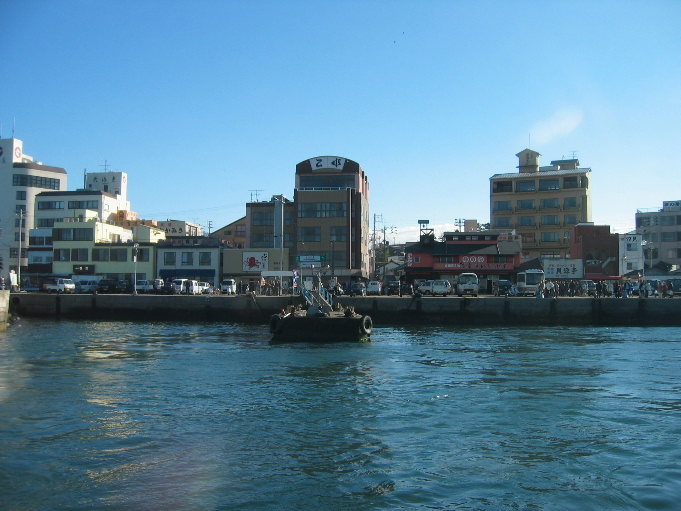
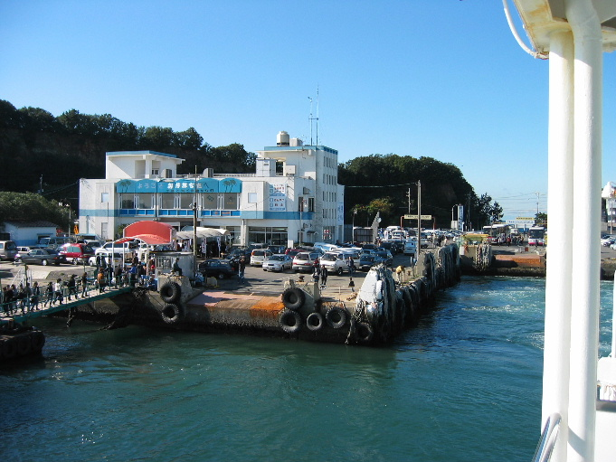
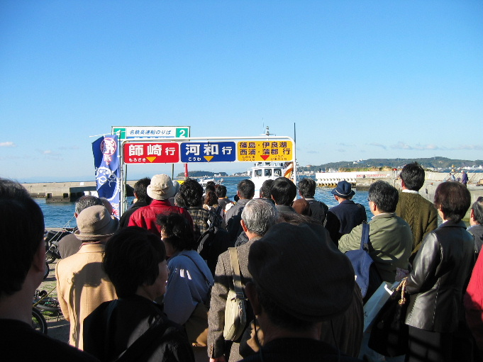

◎ 2003年南東北6m DXer's 忘年会(03.Dec.2003)
暦も余すところあと一ヶ月となり、今年も"真の6mをこよなく愛する同士"の皆さんとこの一年を振り返り、
「アアだった、コウだった」とうら話？を肴に一献設けたいと思います。
つきましては、下記の内容にて忘年会を開催いたしますので、他からの誘いも多々あるとは存じますが、
是非ご参加をお願いいたしたくご案内します。
開催日: 2003年12月20日(土) 17時00分から19時00分(2時間飲み放題)
場 所: 仙台ワシントンホテル 三十三間堂(一次会)
TEL 022-264-2274
会 費: (1)一次会 5,000円（当日集金)
(2)宿泊 7,400円（個人でチェックアウト時お支払い下さい）
なお、勝手ですが12月15日以降のキャンセルは各自ご負担でお願いします。
予約席名: 南東北6mDXer's忘年会(ひらま)
申し込み: 12月12日(金)までにJA7QVI・平間宛てお願いします。
(1)コールサイン、(2)住所、(3)お名前、(4)宿泊の有無
参加者リスト作成のため、出来れば(5)電話、(6)携帯電話、(7)e-Mailアドレスを表記願います。
◎ 帰りの時間を気にせず、ゆっくりアイボールQSOを楽しみたいと思い同ホテルを10名分をリザーブ
致しましたので極力、宿泊をお勧めします。(シングル7室と二次会用？トリプル3名分の1室)
2003年南東北6m DXer's忘年会幹事 JA7QVI 平間 隆
〒989-2331 宮城県亘理郡亘理町吉田字流146-1058
◎ 2003 VSG/VCGミーティング・JA2忘年会、日間賀島(ひまがじま)で開催(24.Nov.2003)
今年のVSG/VCG全国大会は11月22日(土)、23日(日)の両日、愛知県知多郡南知多町日間賀島(ひまがじま)西港・御やど「乙姫」で開催された。
2エリアの忘年会との共催で行なわれた今大会は、趣向を変えて例年行われている懇親会がミーティングのメインとなった。
"飲み会"一本に絞られた大会では、翌日を気にする事無く夜遅くまで飲み明かすメンバーで大いに盛り上がった。
晴天に恵まれた翌日は朝食前に"渡し舟"の桟橋で記念撮影、これがこの日の唯一の団体行動だった。
夕食並みのボリュームのある朝食を終えたメンバーは、三々五々フェーリーで日間賀島を後にした。

日間賀島西港前の宿「乙姫」(中央のビル)


知多半島、伊良湖半島から日間賀島へはフェリーで(知多半島・師崎港)
右は師崎(もろさき)、河和(こうわ)へのフェリー乗り場
[エリア別参加局]
JA1RJU JA2BNV JE2IIH JF2KOZ JA3MF JN3NFQ JA9SSB
JE1CUS JA2BZY JE2WLD JG2BRI JA3FYC JA9SJI
JI1WTF JA2EMQ JE2PUC JI2EVL JA3QVQ JH7OHF JA9TLD
JJ1CKD JA2IYH JE2XBY JI2UNR JR3HED : XYL
JO1KBC JA2POK JF2EEK JI2XIU JG3IFX : 2ND CQ出版(JF1UMK)
JO1PSX JR2HCB JF2HEV JL3IQE JH7VEP
|
 2003 West Malaysia(9M2)
2003 West Malaysia(9M2)